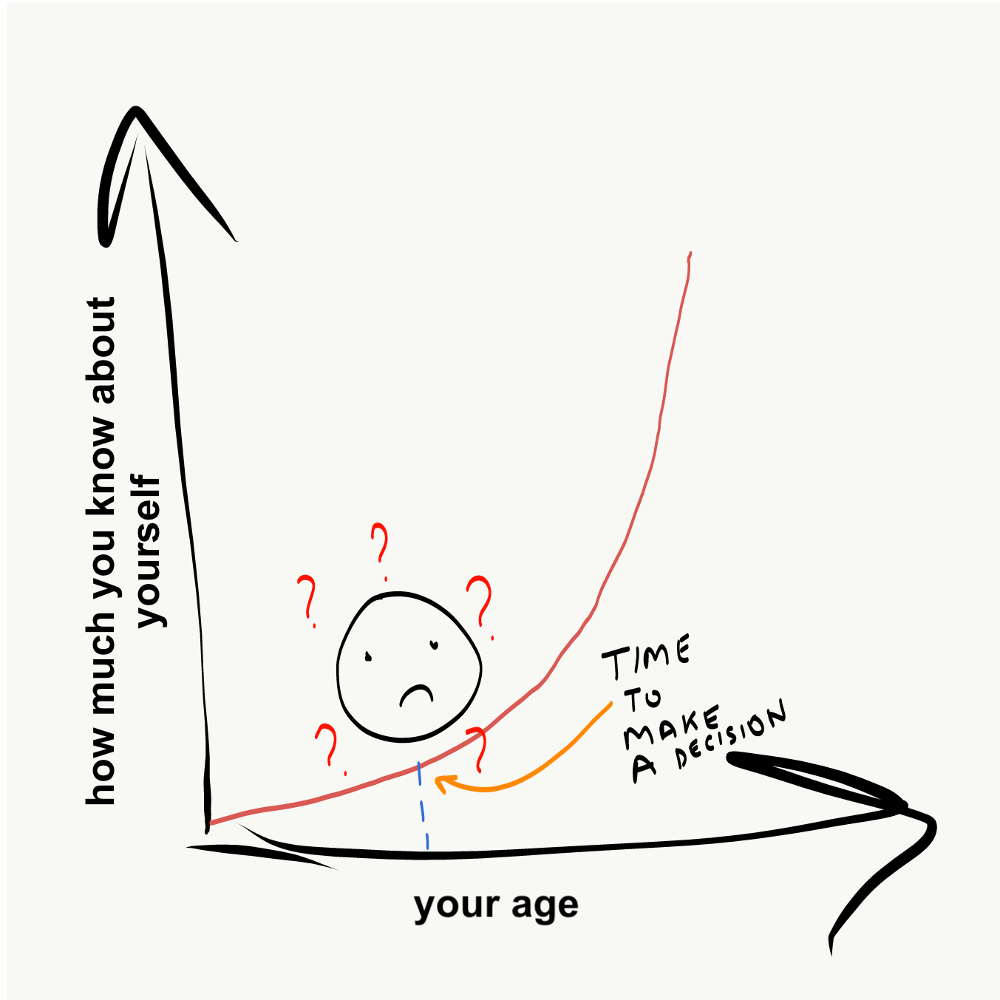
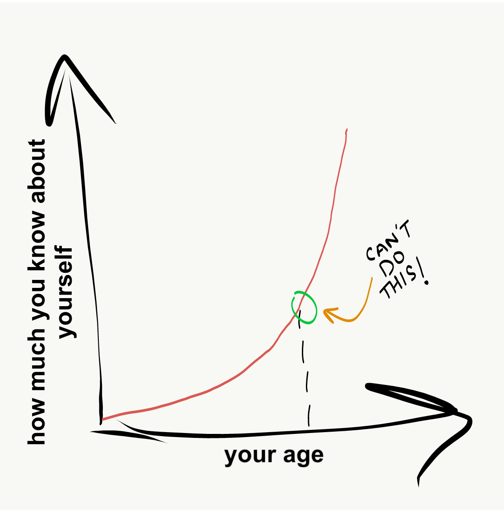
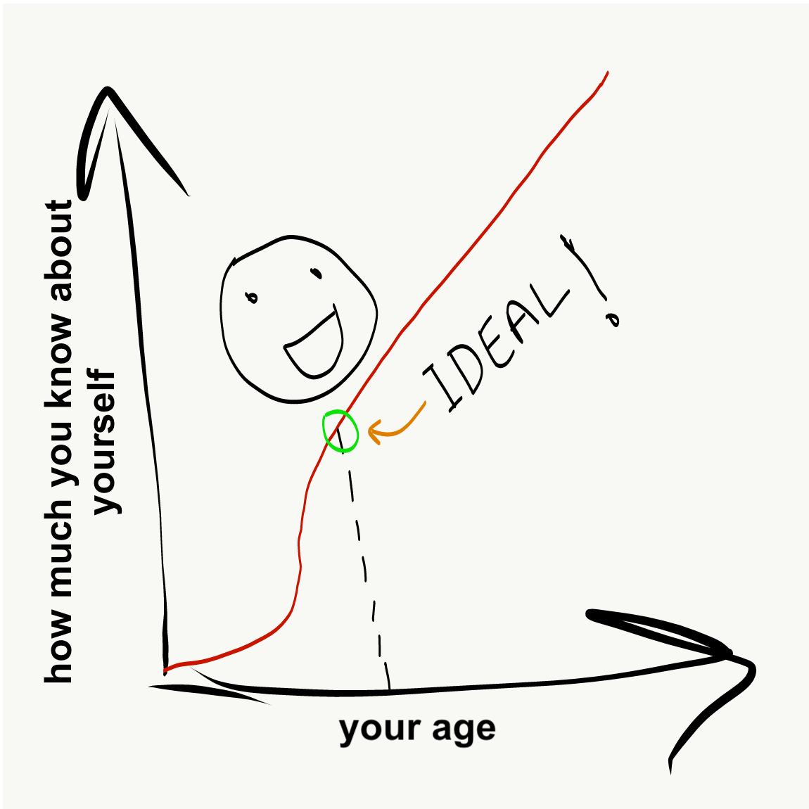
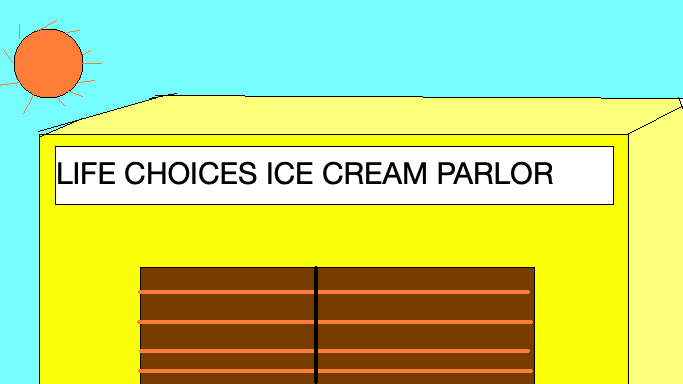
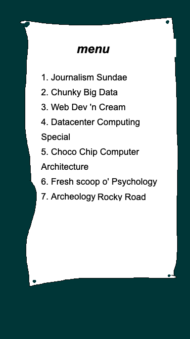

What do I do With My Life?
One of the most common problems I have seen college students face is the anxiety and fear that comes with not knowing what it is that they want to do with their lives. For some reason, we are expected to know exactly what we want to do with our lives early on, and use this knowledge to motivate our decisions. When we don’t have this certainty, there is a sense of dread and anxiety that takes over. It seems like everyone else around you has the answer to this elusive question and you’re the only one who is clueless. If this sounds familiar, you are not alone! In fact, not knowing the answer to this question is the norm.
Having experienced this problem first-hand and having spoken to other people who have felt the same way, I want to use this post to make a case for why uncertainty is okay. Not only this, but also why it is best to approach this situation with a mindset of curiosity and experimentation rather than allow it to bring us anxiety and a sense of dread.
The paradox of making big life choices early on in our lives is that we are required to make high stakes decisions at a time when we know very little about ourselves. We are poorly equipped to make these choices, and that’s what breeds the anxiety.

Ideally, we want to be making these decisions when we know a lot more about ourselves. There are 2 ways to do this:
- make these decisions much later: Unfortunately, this is impractical for obvious reasons. This brings us to option #2…
- learn more about yourself right now:

An ideal situation! If you can learn more about yourself and arm yourself with the intel needed to make a string of well-informed decisions, that will be the end of painful ambiguity and cluelessness.

The question naturally arises: how does one go from the conventional situation to the ideal one? I’m glad you asked! Allow me to explain using an overly general, poorly illustrated, no-one-asked-for-this, unnecessary analogy. Welcome to the Life Choices Ice Cream Parlor!

Let’s say you walk into an ice cream parlor with one goal - buy a huge, huge bucket of ice cream that will last you several years. Here’s the catch: you don’t know how any of these flavors taste.
Picking one at random seems like a bad idea, what if you buy a bucket of “Web Designer” ice cream and hate it?
Instead, a much better idea is to ask for tasters. Experiment! Try some “Data Science” ice cream. Ask for a taste of the “Distributed Computing” special. Take a deep dive into the “Introduction to Econometrics” sundae. As you try more of these flavors, you begin to develop a sense of what you like, and equally importantly, what you don’t like. What this translates to in real life is getting ‘tasters’ of your options. These tasters are in the form of courses, independent projects, online research, and reaching out to people who have been working in the field you are considering.

By asking for these ‘tasters’, you learn a lot more about yourself. Your likes, your dislikes, your interests, and a lot more. The end result is, you walk out with a tub of ice cream you know you will enjoy.
“Let go of certainty. The opposite isn’t uncertainty. It’s openness, curiosity and a willingness to embrace paradox, rather than choose up sides.”
- Tony Schwartz
When I graduated with my Bachelor’s degree in 2019, I thought I was going to walk out with a tub of Embedded Systems ice cream. Instead, after taking a great Computer Architecture course during grad school, I realized I enjoyed it a lot more. Had I not taken this course, I wouldn’t have known what I was missing out on. This also leads to an equally important side point that I failed to see as a college freshman: “What do I do with my life” is a flawed question! It assumes that adulthood is this monolithic, long, monotonous journey containing one single activity or job, but it isn’t! If Julia Child can be an extraordinary chef while also being a US spy (this is true), you can do different things too! I am a hardware engineer by day and musician + writer by night. Let go of any fear that you are ‘locked in’ to your choices.
At the end of the day, if you find yourself feeling anxious about not knowing what you want to do and not knowing how to make the decision, please remember that you are not alone! This is the norm, and I’m a big fan of experimenting and broadening my horizons before I make a decision. Study broadly and without fear, and you will end up with multiple flavors of ice creams - all of which you know you enjoy.
See you next week for a new post.
Thanks for reading! You can always email me to chat about this post - or anything else.
As is true for any advice or counsel you ever receive: Y.M.M.V! Your mileage may vary. Some advice can be a vice. Feel free to take what you can use, and leave the rest. There are no rules.